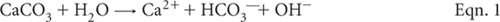
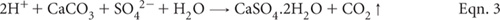
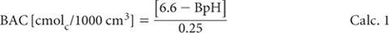
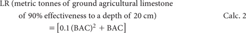

Neutralisation reactions of agricultural limestone [calcium carbonate (CaCO3)], in acidic soils are complex, but rely on the hydrolysis of sparingly soluble CaCO3, involving one or more chemical reactions.

In tropical soils containing reactive colloids of Al, neutralisation with limestone can be considered as undergoing the following reaction:
In the special case of acid sulfate soils, the neutralisation reaction with agricultural limestone (or equivalent) includes:

Although these reactions can operate concurrently and are reversible, reversibility is unlikely to be significant in strongly acidic soils found across vast areas of Australasia, particularly those that are highly weathered and/or occur in humid regions.
If the reactions shown in Eqn. 2 and Eqn. 3 go forward to completion, one mole of CaCO3 will produce one mole of CO2. That is, one tonne of CaCO3 has the potential to produce ≈0.44 tonne of CO2, equivalent to 0.12 tonnes C as CO2. It follows that liming of soil should be undertaken wisely, in order to achieve the desired neutralisation at minimum cost and with minimum production of CO2, which is a greenhouse gas if the CO2 formed reaches the atmosphere.
Sims (1996) defined lime requirement as the amount of agricultural limestone or other basic material needed to increase the pH of the soil from an unacceptably acidic condition to a value that is considered optimum for the desired use of the soil. McLean (1982) also referred to it as the capacity factor of soil acidity, since it equates to the fraction of soil acidity that must be neutralised to achieve a desired soil pH.
Measurement of soil pH can quickly indicate if a soil is acidic but pH alone is a poor indicator of a soil’s lime requirement (LR). Accordingly, more reliable laboratory procedures for determining the LR of soils have been sought. Many of the more successful chemical approaches and procedures have been discussed by McLean (1982) and Alley and Zelazny (1987). Sims (1996) discussed a range of analytical factors that need to be considered when selecting and using LR tests.
Table 16.1. Summary detaÕs of method codes, method titles, technologies and expected reliabÕity of tests for lime requirements described in this chapter.
Code |
Technology |
Test method |
Notes |
16A1 |
Calculation, using exch. Al3+. |
Calculated lime rate – from exch. Al3+. |
Useful test where acid soil infertility is due primarily to exch. Al3+. Lime rates obtained are often lower than those obtained by Method 16D1. |
16B1 |
Calculation based on exch. Al3+ and ECEC. |
Calculated lime rate – Cregan. |
Useful test where acid soil infertility is due primarily to exch. Al3+ and crop tolerance to small amounts of soil Al is understood. |
16C1 |
Mehlich buffer solution used to estimate buffer soil acidity for mineral soils. |
Lime requirement – Mehlich single buffer. |
Quick test dependent on existence of robust field-derived correlations between Mehlich soil-buffer pH and the amount of limestone required to reach a specified soil pH, typically 5.5 or 6.5. |
16D1 |
Four day equilibration of air-dry soil with graded concentrations of Ca(OH)2. |
Lime requirement – Dunn titration curves. |
A slow-to-perform, classical laboratory procedure, mostly limited to research projects. |
Laboratory methods typically commence with air-dry soils of <2 mm. This can be justified provided care is taken when sampling, during transport to the laboratory, and in the process of sample preparation. These key steps must be undertaken in a manner that minimises the likelihood of chemical changes, such as the oxidation of pyritic minerals. More details on handling soils containing sulfides are provided in Chapter 20.
Four optional procedures for lime requirements were provided by Rayment and Higginson (1992). These are included and updated in this chapter (see Table 16.1). Two use exchangeable Al3+ as a LR index. The third is based on a single-buffer soil equilibration, while the fourth relies on equilibration of soil with graded amounts of calcium hydroxide [Ca(OH)2] and subsequent measurement of pH in the aqueous soil suspension. See preambles for individual methods for more details on each. Chapter 20 includes field and laboratory procedures for neutralising the actual and potential acidity associated with ASS.
Several investigators have proposed that lime rates for acidic, highly weathered soils should be based on the amount of exchangeable Al3+ present (e.g., Kamprath 1970), rather than on raising soil to a predetermined value such as pH 6.5. This method is based on findings (Mendez and Kamprath 1978) that liming rates equivalent to exchangeable Al3+ × 1.5 can neutralise most of any toxic Al present, thus creating suitable soil conditions for the growth of most plants.
The method has limitations, especially when the presence of sulfides and the likelihood of manganese toxicity contribute to acid soil infertility. Moreover, calculation-factors other than 1.5 may be necessary in some situations (e.g., Cochrane et al. 1980). This method’s main advantage over Method 16B1 is that an estimate of exchangeable Al3+ by Method 15G1 is the only analytical requirement.
1 cmolc/kg of Al3+ (oven dry soil) |
= 1 cmolc/kg of CaCO3 |
|
= 500.4 mg CaCO3/kg |
Assuming field moist soil bulk density is 1.0 g/cm3, then 1 ha to a depth of 10 cm = 106 kg
Therefore 1 cmolc/kgof Al3+ |
= 500.4kg/ha CaCO3 |
Now 1.5 × 1 cmolc/kg of Al3+ |
= 1.5 × 500 kg/ha CaCO3 |
|
= 750 kg/ha CaCO3 |
Lime requirement (kg CaCO3/ha 10 cm) = 750 × cmolcAl/kg of the soil segment
where:
• cmolcAl/kg is for a specified 10 cm profile segment, and
• rates of CaCO3 (agricultural grade; see Note 1) are additive for each 10 cm profile segment under consideration.
Make appropriate adjustments if soil bulk density varies from 1.0 g/cm3 and/or if the expected efficiency of agricultural limestone varies from 100%.
Report lime requirement (kg CaCO3/ha 10 cm).
1. The effectiveness/efficiency of liming materials depends on particle size and chemical composition, in addition to the amount applied (e.g. van Lierop 1985; Oldham 2007).
Fine material reacts much more quickly and is therefore more effective than more coarsely ground limestones, coral sand and the like. Lime that passes a 60 mesh sieve is commonly rated as having an efficiency rating (ER) for fineness = 100%; that passing through a 20 but not a 60 mesh sieve = 60%; that passing an 8 but not a 20 mesh sieve = 20%; while that not passing through an 8 mesh sieve = 0. These ERs take account of the time required to dissolve the limestone. Assuming a limestone contains 78.8%, 10%, 2.4% and 7.8% of each sieve size fraction, then the fineness ER would equate to 85.28%.
The other key product variable is the product’s neutralising value (NV) or neutralising capacity, which is determined chemically and expressed as a percentage of pure CaCO3 (chemically pure CaCO3 has a NV of 100%; dolomitic limestone has a theoretical NV of 108%). Impurities such as clays in limestone reduce NVs.
To determine the effectiveness/efficiency or AV of limestones, the particle size ER has to be adjusted by the NV, plus an additional adjustment for moisture content (MC) of the limestone. For example, a limestone having an ER of 85%, a NV of 95%, and a MC of 13%, has an AV = {85% ER × 0.95 NV × [1.00 – 0.13 MC]} = 70.25%.
There is evidence that a certain amount of exchangeable Al3+ can be tolerated by most plants. When a tolerable level of Al is known or assumed, it is possible to calculate a lime requirement based on the amount of exchangeable Al3+ to be neutralised, particularly for soils with low permanent charge and relatively high pH dependent (variable) charge (Kamprath 1980). Generally, it is necessary to add more agricultural limestone than that calculated on a chemical equivalent basis (Cochrane et al. 1980). Kamprath (1980) gives examples where 1.5 to 3.3 times the equivalent rate have been used. The formula (Cregan 1980; adapted from Kamprath 1978; used to estimate lime requirement in this method) is as follows:
Lime requirement (kg/ha) = [cmolcAl/kg to be neutralised × 1300]
where:
• 1300 is a factor that assumes a soil bulk density of 1.3 g/cm;
• the calculation applies to limestone with an AV of about 90% (see Method 16A1, Note 1);
• the calculation incorporates an allowance for incomplete neutralisation; and
• Al3+ to be neutralised = [(Exch. Al3+ present) – (Exch. Al3+ at maximum non-toxic level)] (both as cmolcAl/kg).
A complication in applying the above calculation is that tolerable levels of Exch. Al3+ are commonly expressed in terms of % Al saturation of the CEC: e.g. 20%. The Exch. Al3+ content of the soil segment under consideration and the Exch. Al3+ concentration corresponding to the tolerable % Al saturation in the same soil segment must be established initially from the relevant ECEC (Method 15J1) and % Al saturation (Method 15O1) as follows:
where
• ECEC is expressed as cmolc/kg, and
• all values relate to the same profile segment.
Lime requirement (kg CaCO3/ha 10 cm)
{1300 × [cmolcAl/kg in the soil segment] – [cmolcAl/kg corresponding to maximum non-toxic level]}
where:
• rates of lime are additive for each 10 cm profile segment under consideration.
Make appropriate adjustments if soil bulk density varies from 1.3 g/cm3 and/or if the expected efficiency of agricultural limestone varies from 90%. See Method 16A1, Note 1 for guidance on calculating the AV of this material.
Report lime requirement (kg CaCO3/ha 10 cm) on an air-dry basis.
Mehlich’s single buffer pH method for LR was primarily calibrated against exchangeable acidity (unbuffered salt extract) with special reference to exchangeable Al3+. In addition, the buffer pH acidity was standardised against crop response to liming under greenhouse and field conditions (Mehlich 1976).
Table 16.2. PredictŠn of field lime requirements from soÕ -buffer pH values, based on relatŠnships developed by Aitken et al. (1995).
Mehlich soÕ -buffer pH |
Lime requirement (t/ha 10 cm) |
|
to pHw 5.5 |
to pHw 6.5 |
|
4.5 |
8.6 |
18 |
5.0 |
5.0 |
11 |
5.5 |
2.2 |
5.7 |
6.0 |
0.5 |
2.3 |
6.5 |
<0.5 |
0.5 |
The main objective of this procedure for LR is to determine the quantity of CaCO3 needed to neutralise a portion or all of the exchangeable acidity for optimum plant growth. This quantity is expressed by a curvilinear function of BAC for mineral soils.
The method also includes a measurement of soil pH (water), using a 1:1 soil/water ratio (on a volume basis) for reasons given by Mehlich (1976). The Mehlich single buffer method has been found (Aitken et al. 1989; 1995) to be well correlated in laboratory incubation and field studies involving amounts of CaCO3 required to lessen the acidity of surface soils from eastern Queensland to pHw 5.5 and pHw 6.5. Table 16.2 provides examples from field-based studies.
Sodium Glycerophosphate [Na2C3H5(OH)2PO4.5½ H2O]
Laboratory-grade chemical is satisfactory, and is much more economical than the purer crystalline beta form.
Buffer Solutions pH 4.0 and pH 7.0
As for Method 4A1.
1:1 Aqueous TEA Solution
Add 50 mL triethanolamine [N(CH2CH2OH)3; s.g. 1.117–1.125 g/mL] to a 100 mL volumetric flask. Make to volume with deionised water.
Checking Solution for Mehlich Buffer
{AlCl3 – HCl mixture [0.0167 M AlCl3.6H2O + 0.05 M HCl]}
Dissolve 4.024 g aluminium chloride (AlCl3.6H2O) in 0.05 M HCl in a 1 L volumetric flask. Make to volume with 0.05 M HCl.
Mehlich Buffer Solution
To ≈750 mL of deionised water in a 1 L volumetric flask add 2.5 mL glacial acetic acid (CH3COOH) and 9 mL of 1:1 aqueous TEA Solution. Add 43 g ammonium chloride (NH4Cl) and 20 g barium chloride (BaCl2.2H2O) and dissolve. Separately dissolve 18 g sodium glycerophosphate [Na2C3H5(OH)2PO4.5½H2O] in 200 mL of deionised water and transfer to the 1 L flask. Allow solution to reach room temperature, following the endothermic reaction, and make to volume with deionised water: mix thoroughly.
Dilute an aliquot of the buffer solution with an equal volume of deionised water and determine pH. The pH of the buffer reagent should be 6.6. If it is above pH 6.64, add (drop wise) glacial CH3COOH; if below pH 6.56, add (drop wise) 1:1 aqueous TEA Solution to bring buffer solution to pH 6.6.
Check concentration of buffer by adding 10 mL AlCl3 – HCl Checking Solution to 10 mL buffer plus 10 mL deionised water, and determine pH. The pH should be 4.1 ± 0.05.
Before measuring buffer pH (BpH) of soil suspension, calibrate pH meter using buffers pH 4.0 and pH 7.0 and/or in accord with manufacturer’s instructions. Check Mehlich Buffer Solution (20 mL buffer plus 20 mL deionised water) is pH 6.6, then proceed.
Take a 20 cm3 scoop (see Note 1) of air-dry mineral soil (<2 mm) and place in a 100 mL beaker. Add 20 mL deionised water and stir well. After about 30 min, read soil pH while stirring, and record result as pH water (pHw1:1). Then add 20 mL Mehlich Buffer Solution, stir thoroughly and after 60 min read pH (BpH) to the nearest 0.05 unit, while stirring. If it is desired to extend buffer capacity below pH 4.0, add an additional 20 mL of Mehlich buffer solution, equilibrate with stirring, and measure BpH after 60 min.
(a) For a single 20 mL aliquot of Mehlich buffer solution, convert buffer pH (BpH) into buffer pH acidity (BAC) as follows:

If an additional 20 mL portion of Mehlich Buffer Solution was used, multiply BAC from Calc. 1 by 2.
(b) For LR of mineral soils when plants are known to have a moderate tolerance of acidity, and soil pHw1:1 is <6.5, use the following relationship:

(c) For LR of mineral soils when plants are known to have low tolerance of acidity, and soil pHw1:1 is <6.5, multiply LR from Calc. 2 by 1.5.
Report Mehlich Lime Requirement (t/ha 20 cm), noting the basis on which the estimate was made.
1. Use a volumetric scoop of 20 cm3 capacity, made of stainless steel, brass or plastic.
2. For peaty and other soils of high (>20%) OM content, other relationships to derive LR must be used. See Mehlich (1976) and Anon (1980) for details.
3. In all cases when soil pHw1:1 is below the indicated optimum, Mehlich (1976) suggests that 1.0 t/ha 20 cm of lime (or equivalent) should be applied, even though BAC is <0.5 cmolc/1000 cm3.
This method (Dunn 1943) for indicating amounts of limestone required to raise soil pH to prescribed levels is based on measurement of pH following equilibration for 4 days of air-dry soil (<2 mm) with graded concentrations of calcium hydroxide [Ca(OH)2].
0.02 M Calcium Hydroxide Solution
Calcine a quantity of calcium carbonate (CaCO3) as described in Method 10B1. Dissolve 1.1216 g of the calcined material (CaO) and make to 1 L with CO3-free deionised water to produce a limewater solution of ≈0.02 M Ca(OH)2. Avoid subsequent contact with the atmosphere. Confirm molarity by standardisation with acid, in a similar manner to that described in Method 4D1.
Weigh 10.0 g of air-dry soil (<2 mm) into a series of 250 mL Erlenmeyer flasks. Add graded volumes of 0.02 M Ca(OH)2 to each, on the assumption that 5.0 mL of 0.02 M Ca(OH)2 – when added to 10 g of soil – is equivalent to 1 t/ha of pulverised limestone with an AV of 90%, applied to a depth of about 20 cm on many soils.
Dilute to 100 mL with deionised water, add 3 drops of chloroform (CHCl3) to suppress microbial activity, stopper flasks, and shake well (briefly by hand). Allow to stand at ≈25°C for 4 days, with brief, thorough shaking twice daily. Soil type, initial soil pH, and desired soil pH will influence the number of sub-samples to be used and the volumes of 0.02 M Ca(OH)2 added.
In a similar manner to Method 4A1, determine the pH of the suspensions. Subsequently construct a titration curve (or regression equation) for each soil by plotting pH values on the ordinate and ‘kg pulverised agricultural limestone equivalent’ on the abscissa. Read off the approximate quantity of limestone necessary to achieve the preferred soil pH.
Report Dunn lime requirement (t/ha 20 cm) and the preferred (target) pH.
Alley MM and Zelazny LW (1987) Soil acidity: Soil pH and lime needs. In Soil Testing: Sampling, Correlation, Calibration, and Interpretation. (Ed JR Brown) pp. 65–72. SSSA Special Publication 21. Soil Science Society of America Inc, Madison, WI.
Aitken RL, Moody PW and Dickson T (1995) Field calibration of lime requirement soil tests. In Plant–Soil Interactions at Low pH: Principles and Management. (Eds RA Date, NJ Grundon, GE Rayment, and ME Probert) pp. 479–484. Developments in Plant and Soil Sciences, Kluwer Academic Publishers, The Netherlands.
Aitken RL, Moody PW and McKinley PG (1989) A comparison of laboratory methods for predicting lime requirement in acidic Queensland soils. Proceedings of Australian Acid Soil Research Workshop, Coonawarra, South Australia. p. 41. New South Wales Government Printer, Wagga Wagga.
Anon (1980) Mehlich buffer pH. In Handbook on Reference Methods of Soil Testing – Revised Edition. pp. 19–25. Council on Soil Testing and Plant Analysis, Georgia.
Cochrane TT, Salinas JG and Sanchez PA (1980) An equation for liming acid mineral soils to compensate crop aluminium tolerance. Tropical Agriculture (Trinidad) 57, 133–140.
Cregan PD (1980) Soil acidity and associated problems – guidelines for farmer recommendations. AG Bulletin 7, New South Wales Department of Agriculture.
Dunn LE (1943) Lime–requirement determination of soils by means of titration curves. Soil Science 56, 341–351.
Kamprath EJ (1970) Exchangeable aluminium as a criterion for liming leached mineral soils. Soil Science Society of America Proceedings 34, 252–254.
Kamprath EJ (1978) The role of soil chemistry in the diagnosis of nutrient disorders in tropical situations. In Mineral Nutrition of Legumes in Tropical and Subtropical Soils. (Eds CS Andrew and EJ Kamprath) pp. 313–327. CSIRO, Melbourne.
Kamprath EJ (1980) Soil acidity in well–drained soils of the tropics as a constraint to food production. In Priorities for Alleviating Soil–related Constraints to Food Production in the Tropics. pp. 171–187. International Rice Research Institute, Los Banos, Philippines.
McLean EO (1982) Soil pH and lime requirement. In Methods of Soil Analysis. Part 2 – Chemical and Microbiological Properties, 2nd Edn. (Ed AL Page) pp.199–224. Agronomy No. 9. American Society of Agronomy Inc. and Soil Science Society of America Inc., Madison, Wisconsin, USA.
Mehlich A (1976) New buffer pH method for rapid estimation of exchangeable acidity and lime requirement of soils. Communications in Soil Science and Plant Analysis 7, 637–652.
Mendez J and Kamprath EJ (1978) Liming of latosols and the effect on phosphorus response. Soil Science Society of America Journal 42, 86–88.
Oldham L (2007) Agricultural limestone’s neutralizing value. Publication 1587. Extension Service of Mississippi State University, cooperating with US Department of Agriculture. Rayment GE and Higginson FR (1992) Australian Laboratory Handbook of Soil and Water Chemical Methods. Inkata Press, Port Melbourne.
Sims JT (1996) Lime requirement. In Methods of Soil Analysis. Part 3 – Chemical Methods. (Ed DL Sparks) pp. 491–515. No. 5. Soil Science Society of America Book Series. Soil Science Society of America Inc. and American Society of Agronomy Inc., Madison, Wisconsin, USA.
van Lierop W (1985) Evaluation of agricultural limestone. Soil Fact Sheet, Resource Management Branch, Ministry of Agriculture and Food, British Colombia. Agdex 530, January 1985.